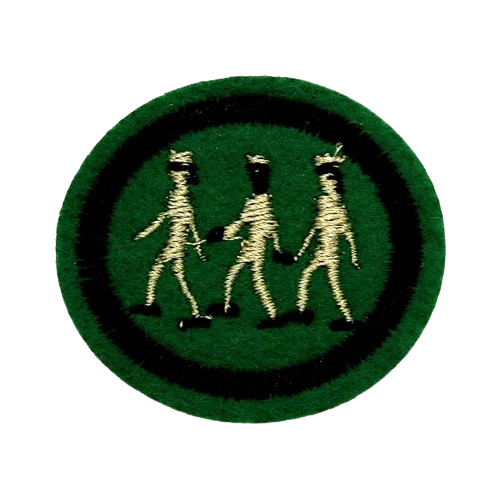

1.
Qual nó é ultilizado para iniciar uma amarra?
Todos os Direitos foram reservados © Ellen Chaves, 2024
2.
A classe de Excursionista é a partir de qual idade?
Todos os Direitos foram reservados © Ellen Chaves, 2024
3.
Qual o significado das cores azul, amarelo, vermelho e branco no símbolo?
Todos os Direitos foram reservados © Ellen Chaves, 2024
4.
O que significa o escudo e a espada?
Todos os Direitos foram reservados © Ellen Chaves, 2024
5.
Quem criou o hino dos Desbravadores? e onde?
Todos os Direitos foram reservados © Ellen Chaves, 2024
6.
Quem desenvolveu esse jogo?
Todos os Direitos foram reservados © ******* *******, 2024
7.
Quem desnhou a bandeira dos Desbravadores?
Todos os Direitos foram reservados © Ellen Chaves, 2024
8.
Salvar do pecado e guiar no serviço, pertence a qual de nossos ideais?
Todos os Direitos foram reservados © Ellen Chaves, 2024
9.
Qual das alternativas é uma classe dos Desbravadores?
Todos os Direitos foram reservados © Ellen Chaves, 2024
10.
Qual o 4 item da Lei dos Desbravadores?
Todos os Direitos foram reservados © Ellen Chaves, 2024
11.
Complete: Pela graça de Deus, serei puro...
Todos os Direitos foram reservados © Ellen Chaves, 2024
12.
Qual nó é ultilizado para finalizar uma amarra?
Todos os Direitos foram reservados © Ellen Chaves, 2024
13.
Complete: O alvo nos diz...
Todos os Direitos foram reservados © Ellen Chaves, 2024
14.
O que significa os 4 A da saudação maranata?
Todos os Direitos foram reservados © Ellen Chaves, 2024
15.
O triangulo dos Desbravadores representa...
Todos os Direitos foram reservados © Ellen Chaves, 2024
16.
O que a cor vermelha representa?
Todos os Direitos foram reservados © Ellen Chaves, 2024
17.
o que a cor branca representa?
Todos os Direitos foram reservados © Ellen Chaves, 2024
18.
O banderim da unidade deve ser carregado pelo?
Todos os Direitos foram reservados © Ellen Chaves, 2024
19.
Sobre o uniforme de gala, é correto afirmar que...
Todos os Direitos foram reservados © Ellen Chaves, 2024
20.
como é chamada a classe para aqueles que já passaram de 15 anos?
Todos os Direitos foram reservados © Ellen Chaves, 2024
21.
Qual destes nós é ultilizado para resgate?
Todos os Direitos foram reservados © Ellen Chaves, 2024
22.
Em que ano o primeiro clube do Brasil foi fundado?
Todos os Direitos foram reservados © Ellen Chaves, 2024
23.
Em que ano foram redigidos o Voto, a Lei e o Lema?
Todos os Direitos foram reservados © Ellen Chaves, 2024
24.
Em que ano foi desenhado o emblema dos desbravadores?
Todos os Direitos foram reservados © Ellen Chaves, 2024
25.
Qual a sexta frase do hino dos desbravadores?
Todos os Direitos foram reservados © Ellen Chaves, 2024
26.
O que significa o triangulo invertido?
Todos os Direitos foram reservados © Ellen Chaves, 2024
27.
Com o que os Desbravadores são confundidos?
Todos os Direitos foram reservados © Ellen Chaves, 2024
28.
A partir de quantos anos se pode ser membro da Diretoria?
Todos os Direitos foram reservados © Ellen Chaves, 2024
29.
Qual a primeira classe?
Todos os Direitos foram reservados © Ellen Chaves, 2024
30.
qual o nome desta especialidade?
Todos os Direitos foram reservados © Ellen Chaves, 2024
31.
Qual nó é ultilizado para iniciar uma amarra?
Todos os Direitos foram reservados © Ellen Chaves, 2024
32.
Qual nó é ultilizado para iniciar uma amarra?
Todos os Direitos foram reservados © Ellen Chaves, 2024
33.
Qual nó é ultilizado para iniciar uma amarra?
Todos os Direitos foram reservados © Ellen Chaves, 2024
34.
Qual nó é ultilizado para iniciar uma amarra?
Todos os Direitos foram reservados © Ellen Chaves, 2024
35.
Qual nó é ultilizado para iniciar uma amarra?
Todos os Direitos foram reservados © Ellen Chaves, 2024
36.
Qual nó é ultilizado para iniciar uma amarra?
Todos os Direitos foram reservados © Ellen Chaves, 2024
37.
Qual nó é ultilizado para iniciar uma amarra?
Todos os Direitos foram reservados © Ellen Chaves, 2024
38.
Qual nó é ultilizado para iniciar uma amarra?
Todos os Direitos foram reservados © Ellen Chaves, 2024
39.
Qual nó é ultilizado para iniciar uma amarra?
Todos os Direitos foram reservados © Ellen Chaves, 2024
40.
Qual nó é ultilizado para iniciar uma amarra?
Todos os Direitos foram reservados © Ellen Chaves, 2024
41.
Qual nó é ultilizado para iniciar uma amarra?
Todos os Direitos foram reservados © Ellen Chaves, 2024
42.
Qual nó é ultilizado para iniciar uma amarra?
Todos os Direitos foram reservados © Ellen Chaves, 2024
43.
Qual nó é ultilizado para iniciar uma amarra?
Todos os Direitos foram reservados © Ellen Chaves, 2024
44.
Qual nó é ultilizado para iniciar uma amarra?
Todos os Direitos foram reservados © Ellen Chaves, 2024
45.
Qual nó é ultilizado para iniciar uma amarra?
Todos os Direitos foram reservados © Ellen Chaves, 2024
46.
Qual nó é ultilizado para iniciar uma amarra?
Todos os Direitos foram reservados © Ellen Chaves, 2024
47.
Qual nó é ultilizado para iniciar uma amarra?
Todos os Direitos foram reservados © Ellen Chaves, 2024
48.
Qual nó é ultilizado para iniciar uma amarra?
Todos os Direitos foram reservados © Ellen Chaves, 2024
49.
Qual nó é ultilizado para iniciar uma amarra?
Todos os Direitos foram reservados © Ellen Chaves, 2024
50.